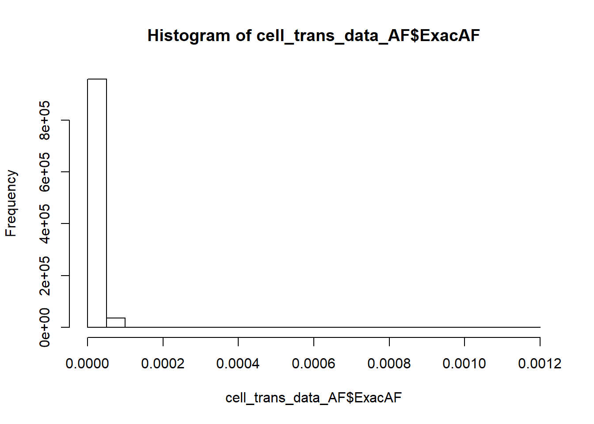
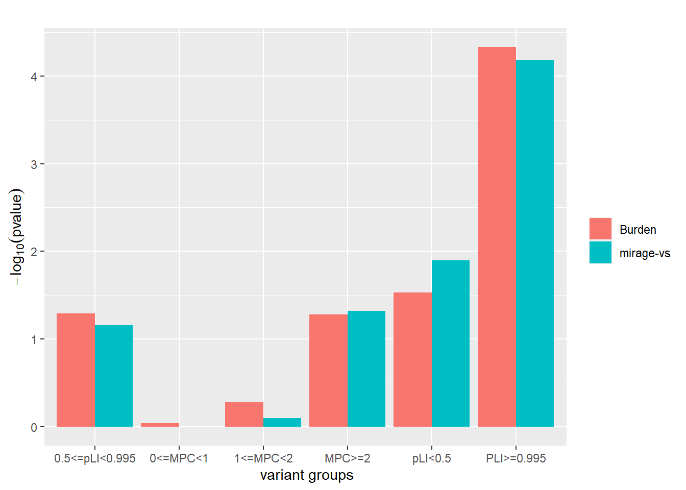
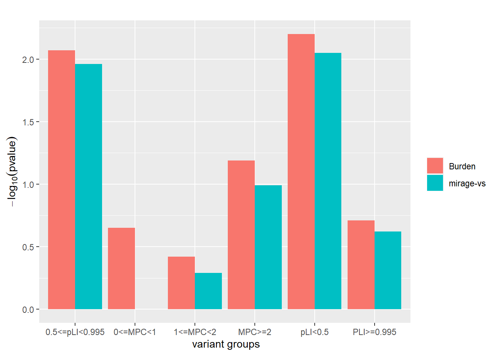

## Warning: package 'tidyverse' was built under R version 3.6.3## -- Attaching packages ------------------------------- tidyverse 1.3.0 --## v ggplot2 3.3.1 v purrr 0.3.4
## v tibble 3.0.1 v dplyr 1.0.0
## v tidyr 1.1.0 v stringr 1.4.0
## v readr 1.3.1 v forcats 0.4.0## Warning: package 'ggplot2' was built under R version 3.6.3## Warning: package 'tibble' was built under R version 3.6.3## Warning: package 'tidyr' was built under R version 3.6.3## Warning: package 'purrr' was built under R version 3.6.3## Warning: package 'dplyr' was built under R version 3.6.3## -- Conflicts ---------------------------------- tidyverse_conflicts() --
## x dplyr::filter() masks stats::filter()
## x dplyr::lag() masks stats::lag()This is the transmitted data from cell paper
## Joining, by = c("Variant", "FILTER", "VQSLOD", "GENE_NAME", "Consequence", "PCC_MAC", "MAC", "AN", "exac_AC", "exac_AN", "gnomad_AC", "gnomad_AN", "Transmitted_proband", "Untransmitted_proband", "Transmitted_sibling", "Untransmitted_sibling", "Transmitted_proband_male", "Untransmitted_proband_male", "Transmitted_proband_female", "Untransmitted_proband_female", "Transmitted_male_sibling", "Untransmitted_male_sibling", "Transmitted_female_sibling", "Untransmitted_female_sibling", "Missense", "PTV", "Inframe", "Indel", "pLI", "loftee", "loftee_flag", "MPC")cell_trans_data## # A tibble: 994,532 x 32
## Variant FILTER VQSLOD GENE_NAME Consequence PCC_MAC MAC AN exac_AC
## <fct> <fct> <dbl> <fct> <fct> <int> <int> <int> <int>
## 1 1:8612~ [PASS] 1.23 AL645608~ [missense_~ 1 2 52584 4
## 2 1:8612~ [PASS] -1.90 AL645608~ [missense_~ 1 1 52616 NA
## 3 1:8612~ [PASS] -0.043 AL645608~ [missense_~ 4 4 52602 NA
## 4 1:8613~ [PASS] -0.745 SAMD11 [missense_~ 1 2 52710 NA
## 5 1:8613~ [PASS] 2.41 SAMD11 [missense_~ 2 2 52652 NA
## 6 1:8613~ [PASS] -1.42 AL645608~ [missense_~ 1 1 52606 NA
## 7 1:8656~ [PASS] -0.856 SAMD11 [missense_~ 1 2 49990 NA
## 8 1:8656~ [PASS] -0.287 SAMD11 [missense_~ 1 2 50314 1
## 9 1:8656~ [PASS] 0.203 SAMD11 [missense_~ 2 2 50628 3
## 10 1:8656~ [PASS] -0.0374 SAMD11 [missense_~ 1 2 50456 1
## # ... with 994,522 more rows, and 23 more variables: exac_AN <int>,
## # gnomad_AC <int>, gnomad_AN <int>, Transmitted_proband <int>,
## # Untransmitted_proband <int>, Transmitted_sibling <int>,
## # Untransmitted_sibling <int>, Transmitted_proband_male <int>,
## # Untransmitted_proband_male <int>, Transmitted_proband_female <int>,
## # Untransmitted_proband_female <int>, Transmitted_male_sibling <int>,
## # Untransmitted_male_sibling <int>, Transmitted_female_sibling <int>,
## # Untransmitted_female_sibling <int>, Missense <lgl>, PTV <lgl>,
## # Inframe <lgl>, Indel <lgl>, pLI <dbl>, loftee <fct>,
## # loftee_flag <fct>, MPC <dbl>colnames(cell_trans_data)## [1] "Variant" "FILTER"
## [3] "VQSLOD" "GENE_NAME"
## [5] "Consequence" "PCC_MAC"
## [7] "MAC" "AN"
## [9] "exac_AC" "exac_AN"
## [11] "gnomad_AC" "gnomad_AN"
## [13] "Transmitted_proband" "Untransmitted_proband"
## [15] "Transmitted_sibling" "Untransmitted_sibling"
## [17] "Transmitted_proband_male" "Untransmitted_proband_male"
## [19] "Transmitted_proband_female" "Untransmitted_proband_female"
## [21] "Transmitted_male_sibling" "Untransmitted_male_sibling"
## [23] "Transmitted_female_sibling" "Untransmitted_female_sibling"
## [25] "Missense" "PTV"
## [27] "Inframe" "Indel"
## [29] "pLI" "loftee"
## [31] "loftee_flag" "MPC"| pLI>=0.995 | 0.5<pLI<0.995 | MPC>=2 | |
|---|---|---|---|
| transmitted | 704 | 1273 | 6341 |
| untransmitted | 564 | 1191 | 6159 |
| pLI>=0.995 | 0.5<pLI<0.995 | MPC>=2 | |
|---|---|---|---|
| OR | 1.2820608 | 1.087920 | 0.6325627 |
| RR | 1.2482270 | 1.068850 | 1.0295503 |
| p.value | 0.0000467 | 0.051352 | 0.0527311 |
In the paper, when \(pLI>=0.995\) for PTV, there are 695 transmitted vs 557 untransmitted from 5869 parents, leading to RR 1.2 and p value 0.07?, and these numbers are close to that in the above table.
Since the data doesn’t have allele frequency, use ANNOVAR to annotate it
head(cell_trans_data)## # A tibble: 6 x 32
## Variant FILTER VQSLOD GENE_NAME Consequence PCC_MAC MAC AN exac_AC
## <fct> <fct> <dbl> <fct> <fct> <int> <int> <int> <int>
## 1 1:8612~ [PASS] 1.23 AL645608~ [missense_~ 1 2 52584 4
## 2 1:8612~ [PASS] -1.90 AL645608~ [missense_~ 1 1 52616 NA
## 3 1:8612~ [PASS] -0.043 AL645608~ [missense_~ 4 4 52602 NA
## 4 1:8613~ [PASS] -0.745 SAMD11 [missense_~ 1 2 52710 NA
## 5 1:8613~ [PASS] 2.41 SAMD11 [missense_~ 2 2 52652 NA
## 6 1:8613~ [PASS] -1.42 AL645608~ [missense_~ 1 1 52606 NA
## # ... with 23 more variables: exac_AN <int>, gnomad_AC <int>,
## # gnomad_AN <int>, Transmitted_proband <int>,
## # Untransmitted_proband <int>, Transmitted_sibling <int>,
## # Untransmitted_sibling <int>, Transmitted_proband_male <int>,
## # Untransmitted_proband_male <int>, Transmitted_proband_female <int>,
## # Untransmitted_proband_female <int>, Transmitted_male_sibling <int>,
## # Untransmitted_male_sibling <int>, Transmitted_female_sibling <int>,
## # Untransmitted_female_sibling <int>, Missense <lgl>, PTV <lgl>,
## # Inframe <lgl>, Indel <lgl>, pLI <dbl>, loftee <fct>,
## # loftee_flag <fct>, MPC <dbl>To run annovar, the simplist format has 5 columns chr, star, end, ref, alt and each row is one variant.
cell_data=read.table("cell_trans_data.txt", header=T, fill=T) # note "fill" some lines with less than 38 elements
locus=matrix(cell_data$Variant)
split_locus=strsplit(locus, ":") # ":" separates chr, start and end
avinput=matrix(nrow=length(split_locus), ncol=5) # format of avinput; chr, start, end, ref, alt
for (i in 1:length(split_locus))
{
avinput[i,1:2]=split_locus[[i]][1:2]
avinput[i,3]=split_locus[[i]][2]
avinput[i,4:5]=split_locus[[i]][3:4]
}
#write.table(avinput, file="avinput.txt",row.names=F, col.names=F, quote=F)head avinput.txt
1 861283 861283 G C
1 861287 861287 C T
1 861289 861289 G A
1 861341 861341 A G
1 861389 861389 C T
1 861398 861398 G A
1 865635 865635 G A
1 865645 865645 T G
1 865655 865655 T G
1 865686 865686 A Gawk '{ for(i=1;i<=NF;i++){if(i==NF){printf("%s\n",$NF);}else {printf("%s\t",$i)}}}'
input.data > output.bedperl annotate_variation.pl -buildver hg19 -downdb -webfrom annovar exac03 humandb/perl annotate_variation.pl -filter -build hg19 -dbtype exac03 avinput humandb/
# the output file with AF annotated is avinput.hg19_exac03_droppedStratify six variant groups PTV (PLI>=0.995, 0.5-0.995, <0.5) and missense (MPC>=2, 1-2, 0-1) by AF (0.01-0.05, 0.001-0.01, <0.001), resulting in 18 categories.
## Joining, by = "Variant"
## Min. 1st Qu. Median Mean 3rd Qu. Max.
## 0.000e+00 0.000e+00 8.245e-06 1.294e-05 1.696e-05 1.200e-03## transmitted untransmitted
## PLI>=0.995&AF<=0.001 704 564
## 0.5<=pLI<0.995&AF<=0.001 1273 1191
## pLI<0.5&AF<=0.001 18959 18591
## MPC>=2&AF<=0.001 6341 6159
## 1<=MPC<2&AF<=0.001 50355 50369
## 0<=MPC<1&0.001<AF<=0.01 0 0
## 0<=MPC<1&AF<=0.001 339394 340489It looks like all variants in the data are filtered with cutoff, like \(0.1%\).
Use mirage-vs to test if there are signals in six variant groups
This figure shows the comparison between burden test (one side two sample poisson test) and mirage-vs for proband in 6 variant groups. \(\gamma=6\) for LoF variant and \(\gamma=3\) for missense when running mirage.
## # A tibble: 6 x 7
## X No_case No_contr OR pval eta_est eta_pval
## <fct> <int> <int> <dbl> <dbl> <dbl> <dbl>
## 1 PLI>=0.995 704 564 1.25 0.0000467 0.161 0.0000663
## 2 0.5<=pLI<0.995 1273 1191 1.07 0.0514 0.0519 0.0698
## 3 pLI<0.5 18956 18589 1.02 0.0295 0.0186 0.0126
## 4 MPC>=2 6341 6159 1.03 0.0527 0.0391 0.0483
## 5 1<=MPC<2 50355 50369 1.00 0.519 0.0107 0.794
## 6 0<=MPC<1 339394 340489 0.997 0.908 0.00602 1
Run mirage on all 17653 genes and \(\gamma=6\) for LoF variants and \(\gamma=3\) for missense.
| parameter | estimate | p value | |
|---|---|---|---|
| \(\hat{\delta}\) | 0.15 | \(1.64\times 10^{-8}\) | |
| \(\hat{\eta}_1\) | 1 | \(3.52\times 10^{-6}\) | |
| \(\hat{\eta}_2\) | 0.48 | 0.03 | |
| \(\hat{\eta}_3\) | 0.12 | 0.01 | |
| \(\hat{\eta}_4\) | 0.20 | 0.05 | |
| \(\hat{\eta}_5\) | 0.02 | 0.46 | |
| \(\hat{\eta}_6\) | 0.0014 | 1 |
This figure shows the comparison between burden test (one side two sample poisson test) and mirage-vs for proband in 6 variant groups. \(\gamma=6\) for LoF variant and \(\gamma=3\) for missense when running mirage.
## # A tibble: 6 x 7
## X No_case No_contr OR pval eta_est eta_pval
## <fct> <int> <int> <dbl> <dbl> <dbl> <dbl>
## 1 PLI>=0.995 20 14 1.43 0.196 0.278 0.243
## 2 0.5<=pLI<0.995 17 5 3.4 0.00845 0.819 0.0109
## 3 pLI<0.5 21 7 3 0.00627 0.732 0.00896
## 4 MPC>=2 267 232 1.15 0.0640 0.105 0.101
## 5 1<=MPC<2 934 920 1.02 0.381 0.0214 0.517
## 6 0<=MPC<1 2697 2640 1.02 0.222 0.00618 1
This R Markdown site was created with workflowr